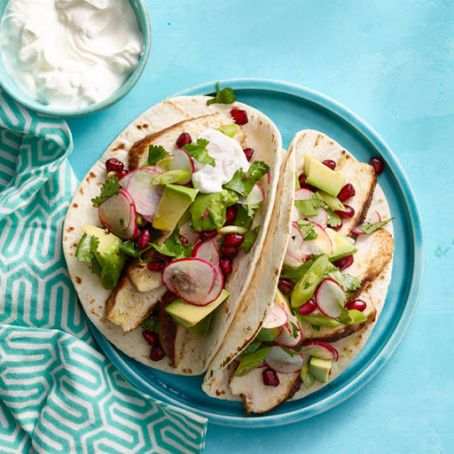

Chicken Tacos

Description
The best chicken tacos. Works for both chicken thighs and breasts
This recipe is stolen from Joshua Weissman's $2 Burrito
Ingredients
- 1lb chicken (whole thighs or diced breasts)
- 14g kosher salt
- 2g onion powder
- 4g garlic powder
- 3g ground cumin
- 4g smoked paprika
- 2g ground pepper
- 15mL vegetable oil
Steps
- Place chicken thighs into a bowl and coat thoroughly with all ingredients.
- In a medium skillet, heat enough vegetable oil to coat the bottom of the pan, and once hot add the chicken. Sear for 2-3 minutes. Flip and sear for 1-2 more minutes.
- Add chicken pieces to a baking sheet and bake in a preheated oven set to 400F for 10-15 minutes or until internal temperature is 165F.
If cooking cooking chicken breasts, no need to bake, just cook in pan until 165 degrees
- Cut chicken into bite-sized pieces and toss in its own juices.